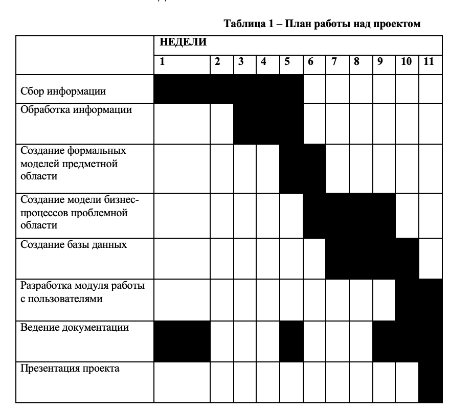

Задание
Тема проекта: проектирование системы IP-менеджмента
Назначение: проектирование системы IP-менеджмента для дальнейшего внедрения в компанию.
Цель: уменьшить нагрузку на специалистов по обработке бумажного документооборота при работе с результатами интеллектуальной деятельности.
Задачи:
Провести анализ проблемной области.
Составить формальные модели проблемной области.
Создать модели бизнес-процессов проблемной области.
Создать базу данных.
Разработать модуль работы с пользователями.
Актуальность разработки можно определить на основании следующих факторов:
Отсутствие аналогов АИС в данном направлении.
Способность настроить АИС под конкретные задачи, избегая наличия ненужного функционала.
Окупаемость финансовых затрат на проектировку АИС за счет увеличения производительности работников и привлечения новых клиентов.
Значительная экономия времени для всех пользователей АИС.
Партнеры: лаборатория технологического предпринимательства и разработки, Международный центр научной и технической информации (МЦНТИ).
Список участников
Матяшова Ангелина Сергеевна, группа 171-372
Осуществляла:
• Сбор и обработку информации;
• Создание формальных моделей;
• Создание модели бизнес-процессов проблемной области;
• Создание er-диаграммы и базы данных;
• Разработка модуля работы с пользователями;
• Ведение документации.
Ход работы над проектом
 |
Ссылка на GIT.